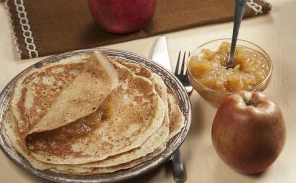

Recepti
Palačinke sa cimetom i jabukama
Savršeno za bilo koji obrok u toku dana, doručak užinu, sladak ručak ili za večeru!
Sastojci:
- 2 jabuke iseckane na kockice,2 kašike vode, 1 kašičica cimeta,3/4 šolje mleka, 2 jajeta, 3 kašike putera, 1/3 šolje vode, 1 šolja brašna, 1 kašika šećera, ½ kašičice cimeta.
Priprema
Da biste pripremili fil od jabuka, stavite 2 iseckane jabuke sa 2 kašike vode i 1 kašičicom cimeta u malu plitku šetpu i kuvajte na umerenoj vatri 10 minuta dok ne omekšaju.
Dodajte ostatak sastojaka za palačinke u NutriBullet čašu i ekstrahujte 20 sekundi. Ostavite u frižideru dok se tiganj greje na umerenoj vatri.
Stavite 1/4 čaše testa na sredinu tiganja i ravnomerno ga rasporedite po tiganju do ivica. Pecite dok ivice ne počnu da se podižu sa tiganja, a zatim ih pažljivo odlepice i okrenite palačinku.
Nakratko pecite s druge strane, oko 10 sekundi. Ponavljajte dok ne potrošite celo testo.
Pilav od ječma

Sastojci:
Za 6 porcija, potrebno je: šolja ječma, 2 kašike putera, ½ šolje badema, 2 čena belog luka(sitno iseckana), 1 crni luk (sitno iseckan), ½ kašičice himalajske soli, ½ kašičice bibera, 3½ šolje vode.
Priprema
Zagrejte rernu na 190oC U velikom tiganju, rastopite puter na srednjoj vatri, dodajte ječam, bademe, beli i crni luk. Dobro promešajte i dinstajte često mešajući dok luk ne omekša, a ječam ne postane zlatast. Potom prespite mešavinu u pleh za pečenje, pa dodajte so, biber i dospite vodu. Dinstajte nepoklopljeno sat do sat i dvadeset minuta, dok se sva tečnost ne upije a ječam potpuno ne omekša. Po želji, garnirajte percima mladog luka.
Sveža i kremasta supa od graška

Sastojci:
- 2 kašičice maslinovog ulja, 2 glavice luka ešalot(tanko iseckanog), 3 šolje graška(svežeg ili smrznutog), 1/2 šolje grčkog jogurta, morske soli po ukusu, bibera(crnog ili belog) po ukusu, estragon.
Priprema
Ekstrahujte sve sastojke u Nutlibulletu, a onda ih sipajte u šerpu i kuvajte 10-15 minuta. Možete ih ostaviti u frižideru da se ohlade i poslužiti ih hladne ili vruće, pravo iz šerpe.